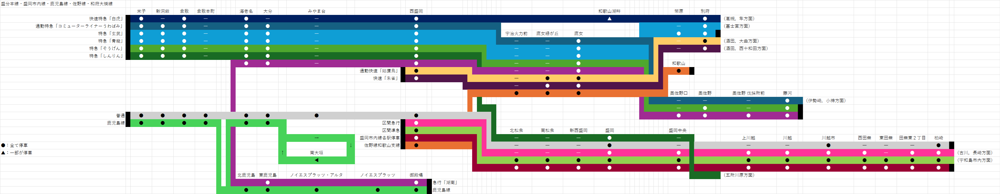
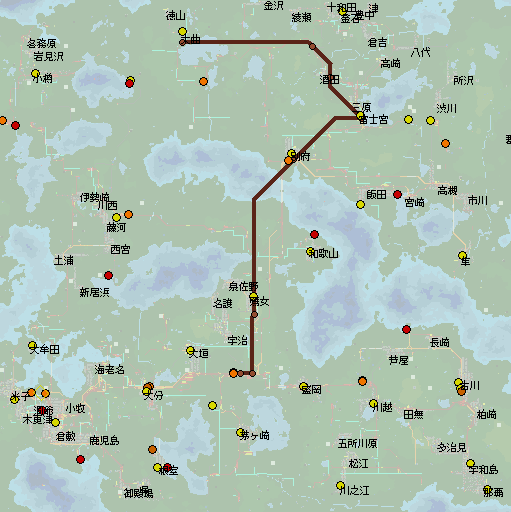

盛分本線系統スパゲッティ～まずはそのままで～
「シムトライブカメラ」というものをSimutrans交流会議^cの方々はご存知ですか？
このホームページが置いてあるGithubリポジトリを覗いていない方々は知らないはずです．というのも，あまり表立って出していないからです．
簡単に言えば，「地図の各地点をつつくとそこのスクショが見れる」ページです．
順次追加していきます．たまに覗くと，地点が追加されているかもしれませんね．是非シムトライブカメラにふらっと来てみてください．
さて，今日は盛分本線系統の煩雑性について．まずはこの路線図をご覧ください．

この地図は，盛分本線が関係する各路線の路線図を一部省略して書き出したものです．（訂正：急行「湖南」号は，ノイエスプラッツ，ノイエスプラッツ・アルタ，北鹿児島を通過します．）
ええ．省略してこれなんです．殆どの系統がそれなりの本数があり，盛分本線がどれくらい旅客輸送において高い役割を果たしているかがわかるかと思います．
まず区間は次のとおりです．
- 盛分本線
本線：米子-西盛岡-盛岡
大垣貨物駅線：大分→大垣→南大垣→大分 - 佐野線
本線：西盛岡-鷹女-奥佐野
和歌山支線：鷹女-和歌山 - 藤野線
奥佐野-藤河 - 和府大橋線
緩行線：鷹女-別府
高速線：西盛岡-和歌山湖畔-別府 - 盛岡市内線
盛岡-柏崎 - 鹿児島線
倉敷本町/海老名-御殿場
●快速特急「白虎」
対別府方面輸送の最高種別です．時速160km/hを出すのですが，路線長がかなり長いがために高速線は非電化です．そのため高速気動車の８両編成で運行しています．
往復にかかる時間：
速達形：2934
停車形：2970
●通勤特急「コミューターライナーうわばみ」
藤河駅から先，さらに伊勢崎を経て小樽まで足を伸ばす長大列車です．２両編成なのによく頑張るなあ
往復にかかる時間：
5238
●特急「玄武」
対別府方面輸送の最主流種別です．時速は130km/hですが，すべての列車が２階建て12両編成で運行しています．
歴史がかなり長く，佐野線和歌山支線と和歌山航路が開通してしばらくたった後に運行開始し，和府大橋が開通するまでは米子と和歌山航路を接続する列車として運行していました．その後，和府大橋が開通してからは対別府輸送の本流として運行しています．
往復にかかる時間：
3085
●特急「青龍」
玄武号を補完する列車です．実態として準特急のほうが適っているかなと思いますが，他の列車との整合上特急列車として運行しています．こちらは２階建て８両編成で運行しています．
区間は米子-別府なので，少しシャトル運行に近い形態ですね．また，停車駅に幣原駅が追加されています．
往復にかかる時間：
2901
●特急「そうげん」
玄武号よりも歴史が長い，特急としては最古参級の列車です．
或る意味，普通の都市間特急と言えるのかもしれません．
往復にかかる時間：
2883
●特急「しんりん」
確か，そうげんの次に運行開始したのがこの列車だったと思います．そうげん号と並び，運行開始のきっかけが全くわからないほどの古株です．
地味に盛分本線を全線走破する唯一の特急です．こちらの世界でも本線を走破する特急があまりないのは同じなようですね．なお，この列車は盛分本線を走破した後に少しだけ盛岡市内線を通り，五所川原線へ入っていきます．
往復にかかる時間：
2069
●急行「湖南」
えーーーーー，変なやつです．鹿児島線の御殿場駅からふらふらと海老名にやってきたあとに西盛岡から佐野線に入り，藤野線の藤河駅まで行く列車です．
こうなったのには原因があります．鹿児島線は設定当時に混雑が悪化し，佐野線の普通電車は赤字を垂れ流し，藤野線は沿線旅客の乗車機会がないという状況がそれぞれ同時に発生していました．そこで，それを全面的に解決するために設定した結果，こんな変なのができたわけです．
往復にかかる時間：
3173
●通勤快速「姑獲鳥」
こちらも長大列車です．西盛岡始発で，和府大橋を渡り富士宮からは酒田線に入り，さらに大曲線に入り終着は大曲駅という列車です．

さぞかし編成も長いのかといえばそんなことはない．130km/h気動車がたった３両１編成です．
往復にかかる時間：
4563
●快速「朱雀」
四神優等のトリです．（鳥だけに）
先程の通勤快速とは始発駅と大まかな経路は同じですが，こちらは富士宮からそのまま北上し西十和田まで行く電車です．
こいつのおかげで北部線（和府大橋より北の路線のことです）には「準快速」が存在します．
急行型電車6両編成で運転しています．
往復にかかる時間：
3174
これで主な列車は紹介し終えました．さて，路線図をもう一度見てください．普通列車と各駅停車が存在すると思います．
定石通り，この普通列車は中距離の近郊電車です．とはいえ，西盛岡までは各駅の停車です．西盛岡を出ると，盛岡，川越市，柏崎の順に停車します．
この停車駅パターンのうち，西盛岡～盛岡は客レ時代の停車駅，盛岡～柏崎は新規設定の停車駅です．
盛岡市内線はインターアーバン，つまり都市間路面電車由来なので，近郊電車を運行する場合はこういうやり方を以て設定するほうがいいんじゃないかな，と思います．
実際，普通列車が存在することで西盛岡～柏崎の「各駅停車は人数が乗らないけど優等がないと対処できない」と米子～西盛岡の「各駅停車を長くしたり往復を短くしないと混んでやってられない」の両方を解決しています．贅沢ですね．
そういうわけで，また今度．